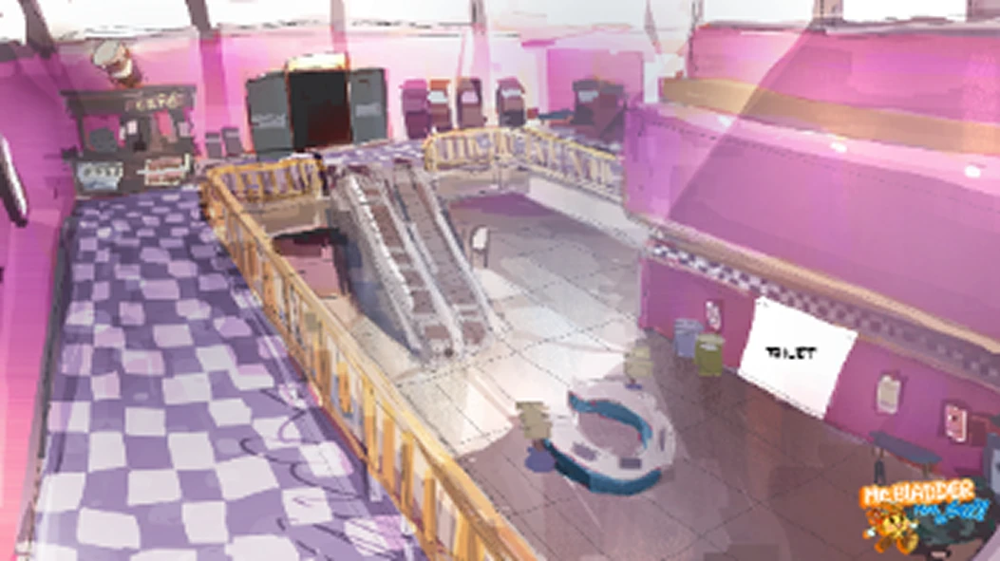
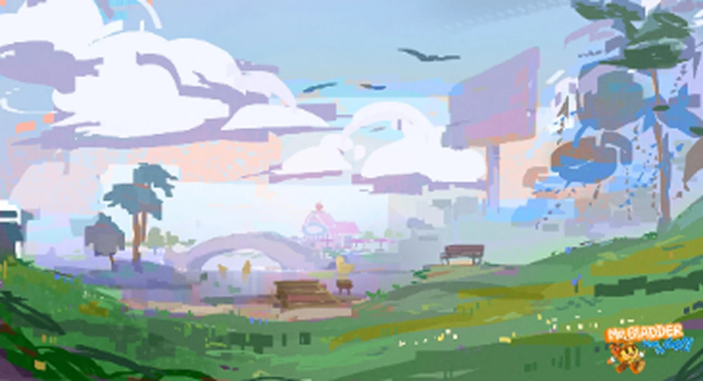
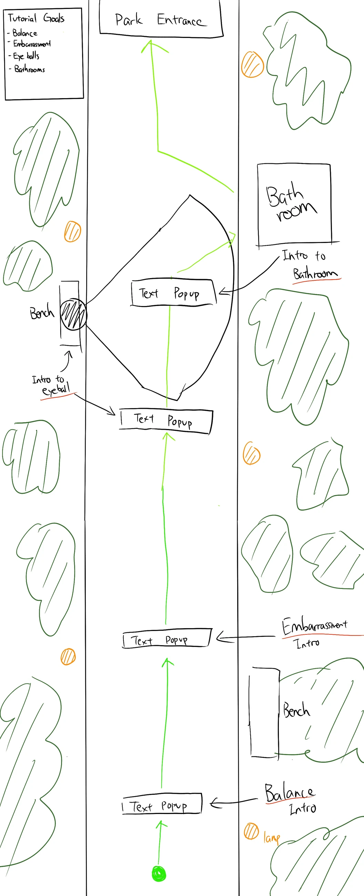
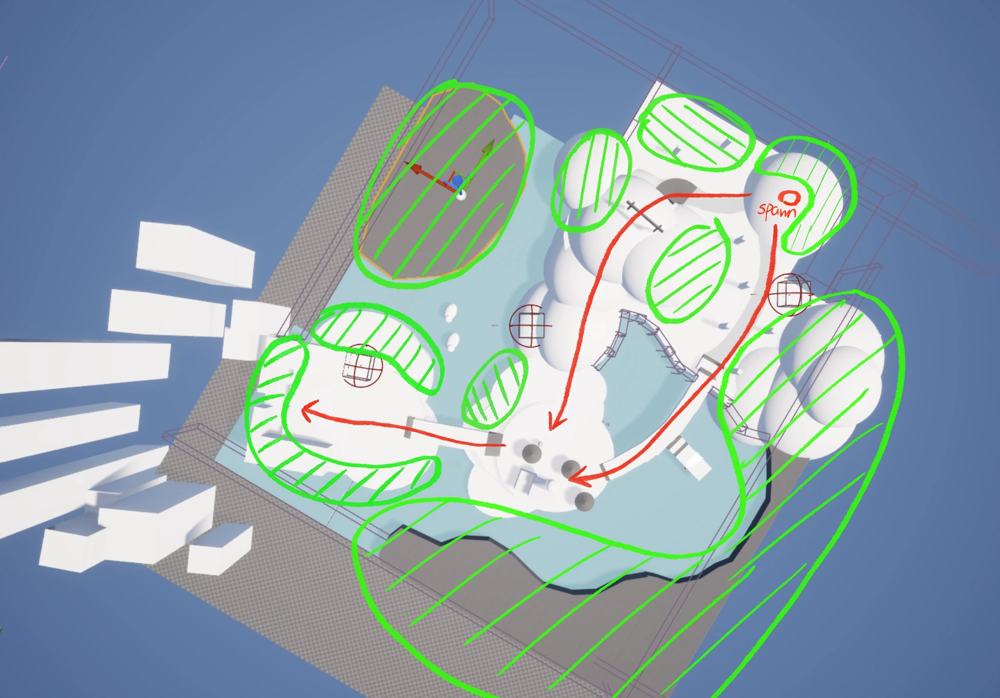

Mr. Bladder Has to Go
Mr Bladder Has to Go is a whimsical balancing game where you play as Mr Bladder, a container-shaped guy in an organ-themed world, who is trying hard not to spill his pee in public.
Concept Art
Concept art by the project’s artists.




My Role
- Designed the tutorial level.
- Created spline-based blocking volumes for the first park level.
- Created and sculpted terrain for the park level in Unreal Engine.
- Designed the park’s terrain layout.
- Documented design feedback and created a level design format guide.
Design Documents

